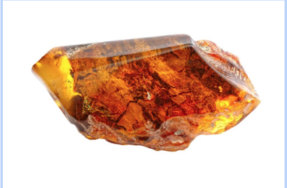
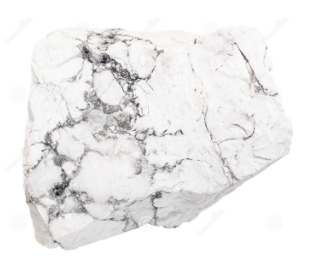
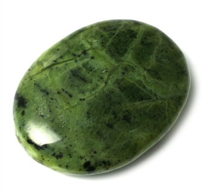
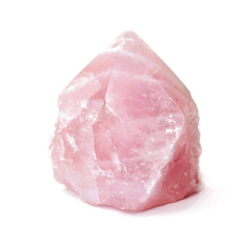

Amaznoite
Chakra: Heart Chakra (4th), Throat Chakra (5th)
Properties:
Promotes love and compassion, bridges the heart with the throat for healthy communication in
relationships, clears chest congestion, eases sore throat and reduced harsh coughs, helps recovery from
emotional trauma, relieve ultimate truths, aid cell regeneration, release fear of judgement, reveals inner
freedom encourages one to speak the truth.
Amber (Fossilized natural resin,sap)

Chakra: Solar Plexus Chakra (3rd)
Properties:
Promotes a sense of renewal and recharged energy, supports the immune system, restores (stomach, kidney,spleen,and liver) problems,
strengthens lower back, pelvis and reproductive organs, stabalizes and grounds emotions, stimulated a positive mindset and attitude,
improves self-confidence, releases fear of judgement.
Healing:
Place on throat or navel to regenerate and strenghten the body.
Wear as a ring or necklace to balance emptions.
Amethyst

Chakra: Third Eye (6th), Crown Chakra (7th)
Properties:
Protects from negative energy, calms the nervous system and brain,eases headaches and migraines, enhance spiritual awareness, reduces
inflammation and redness of skin, purifies the body, aids with overcoming addiction.
Healing:
Wear as jewelry to calm mental stress, nirthstone for February.
Place under pillow to improve quality of sleep.
Place on head to expand awareness.
Angel Aura Quartz

Chakra: Crown Chakra (7th)
Properties:
Connect to (angelic, divine and cosmic) consciousness, heals and balances all seven chakras, reveals new horizons and divine connections,
provides peace and serenity, expands awareness, releases stress, helps with muscle cramps.
Healing:
Meditate with this stone to connect with personal guardian angels.
Angelite

Chakra: Throat Chakra (5th), Third Eye (6th), Crown Chakra (7th)
Properties:
Enables higher levels of communication, connects to spiritual guides and angels, brings awareness, increases perception, provides serenity and
compassion, supports bone density, aids in healing fractures and arthritis, develops spiritual gifts.
Healing:
Carry to enhance connection to spiritual and angelic guides.
Apophyllite
Chakra: Third Eye (6th), Crown Chakra (7th)
Properties:
Spirituality energizes the body, develops trust in the divine, opens the mind to spiritual awakening, relieves tension, stress and anxiety, encourages
calmness and peace, stimulates honesty to self and others.
Healing:
Meditate with this crystal to receive guidance from spirit, your guides and the angels.
Place on head to calm and relax the body.
Aquamarine

Chakra: Heart Chakra (4th), Throat Chakra (5th)
Properties:
Encourages creative expression, enhances immunity to sickness and infections, provides harmonious and clear communication, coothes grief and loneliness,
reduces inflammation, aids with speaking you highest truth, helps sore throat and inflammatory diseases, calms anger issues, relieves stress, connection to
the divine feminine.
Healing:
Place on throat to improve communication and personal/romantic relationships.
Place on painful or sore areas of the body.
Wear to encourage honesty.
Aventurine
Chakra: Heart Chakra (4th)
Properties:
Clears negative energy and negative emotional patterns, reduces anger, encourage gratitude and empathy, explores positive approaches to life, strengthens the body
during illness, promotes tissue repair, supports the heart and blood circulation, encourages optimism and self-confidence, calms the body and mind, destressor, brings
good fortune, prosperity, and blessings.
Healing:
Place over heart to clear negativity and encourage harmony.
Meditate with the crystal to envision your aspirations and where you want to be in life.
Bloodstone

Properties:
Strengthens the body, cleanses blood, brings vitality and purification, helps maintain stamina during physical activity, provides strength to overcome obstacles, encourages
belief in one's self, provides commitment to spiritual influences courage to face illness, inspires altruism.
Healing:
Place over heart, with clear quartz or smoky quartz to open up new life experiences.
Carry to improve stamina and provide courage.
Blue Lace Agate

Chakra: Throat Chakra (5th)
Properties:
Brings peace and calmness, encourages relaxation during stressful times, enhance quality of sleep, eases anxiety and quick temper, helps with inflammation, reduces throat problems
such as soreness and coughing, aids with laryngitis and speech impediments, encourages confidence, helps release negative habits.
Healing:
Place on throat to improve effective communication and soothe anger.
Hold in both hands to relax the physical body.
Wear as a choker to maintain clear and gentile communication, especially during public speaking.
Calcite (Honey)
Chakra: Root Chakra (1st), Solar Plexus Chakra (3rd), Third Eye (6th)
Properties:
Provides clarity and insight, encourages (self-worth, confidence and persistence), enhances intelligence, provides strength and stamina, helps conserve energy, aids with emotional stability,
inspires perserverance, encourages fulfilling commitments, helps overcome obstacles.
Healing:
Carry while playing sports to stimulate focus and perserverance.
Place on head to calm the body.
Carnelian

Chakra: Root Chakra (1st), Sacral Chakra (2nd), Solar Plexus (3rd)
Properties:
Speeds up healing process of injuries, eases stress and tension, increases vitality and strength, purifies blood, improves circulation, encourages courage in personal challenges, promotes sexual
expression and confidence, aids in detox from addictive substances.
Healing:
Place on heart with rose quartz to enhance love and support.
Place on lower abdomen or lower back to reduce pain.
Carry as a "worry stone".
Chrysocolla

Chakra: Root Chakra (1st), Heart Chakra (4th), Throat Chakra (5th)
Properties:
Eases throat problems, supports metabolism and enhances function of thyroid, expresses personal truths, improves communication in large groups, aids with stress related illness, releases stress and anxiety,
encourages expressing inner wisdom, linked with awareness of the Earth.
Healing:
Mediate with this crystal to help build a strong connection with your spiritual being.
Carry while public speaking.
Place over heart to ease breathing.
Citrine
Chakra: Root Chakra (1st), Sacral Chakra (2nd), Solar Plexus Chakra (3rd)
Properties:
Helps restore balance after traumatic or stressful events, attracts abundance, stimulates creative thinking, promotes inspiration, frees the mind of limitations, helps turn ideas into reality, supports hormone balance,
promotes vitality, aids with depression, supports digestion (metabilism) and weight loss, stimulates optimism.
Healing:
Place on forehead to promote creativity.
Place on upper abdomen to reduce tension.
Place around work area to bring good fortune and abundance.
Meditate with this crystal for mental clarity.
Clear Quartz

Chakra: All Chakras
Properties:
Cleanses the (mind, body and spirit), realigns and refocuses the mind, makes goals clear, improves concentration and focus, amplifies any energy field around it, provides pease, clarity, and balance, amplifies intentions,
ability to heal and enhance memory, supports nervous system, intensifies healing of the body, improves communication with spirits.
Healing:
Place in your home to cleanse the space.
Use with any other crystal to amplify its power.
Diamond
Chakra: All Chakras
Properties:
Highest frequency of healing, opens all chakras, expands the energy field around the body, encourages full awareness, reveals your true density and purpose, activities prefrontal lobes, magnifies effects of other crystals,
intensifies emotions, awakens higher capabilities, aids in entering visionaring states of mind.
Healing:
Wear as jewelry to amplify spiritual energy, birthstone of April.
Emerald
Chakra: Heart Chakra (4th)
Properties:
Helps balance the heart, purifies emotions, stimulates (love,compassion,and wisdom), enhances love in relationships, improves eyesight, supports liver function, promotes the awakening to divine love.
Healing:
Place over heart to stimulate pure expressions of love.
Traditionally worn as jewelry, the birthstone of May.
Fluorite
Chakra: All Chakras
Properties:
Combination of purple and green brings spiritual expansion, awareness of higher levels of consciousness, calms and relaxes the body and mind, eases physical and emotional stress, balances the mind, provides
clear decision making, cleanses energy fields around the bod, brings mental clarity, supports (brain, bones, and teeth), helps overcoming vertigo or dizziness, reduces fears of the future.
Healing:
Meditate with this crystal to bring peace to the mind, body and spirit.
Wear to bring peace, joy and happiness.
Garnet
Chakra: Root Chakra (1st), Heart Chakra (4th), Crown Chakra (7th)
Properties:
Balances the mind and emotions, brings vitality and abundance, improves circulation, promotes positive feelings of love, aligns the heart with higher expressions of love, helps get rid of old ways of thinking
and old patterns, promotes self-worth, supports healing of physical issues rooted in emotional wounds.
Healing:
Traditionally worn as jewlry, birthstone for January.
Hematite
Chakra: Root Chakra (1st)
Properties:
Strengthens and energizes the body, builds self confidence, cleanses blood, improves circulation, opens the mind to understand vast perspectives, grounds and protexts the physical body, shield from negative energy,
helps transform dreams to manifestations, aids in self-forgiveness.
Healing:
Place on lower abdomen to ground the body.
Wear to protect against and reflect negative energy.
Howlite

Chakra: Third Eye (6th), Crown Chakra (7th)
Properties:
Alleviates stress, calms anger and frustration, reduces aggressiveness, heightens patience, reveals underlying issues, awakens interest in deeper knowledge, provides wisdom, enhances memory and dream retention, brings serenity
and expands awareness, reveals the true meaning of enlightenment, helps strengthen bones and teeth, balances calcium levels in the body.
Healing:
Meditate with this crystal to gain insight into past lives
Carry to bring inner peace to the physical body.
Jade

Chakra: Heart Chakra (4th)
Properties:
Supports kidneys and lymphatic system, calms the nervous system, promotes unconditional love, health and abundance, spiritual aid that strengthens the heart, detaches from the material world and attaches to the physical world of joy.
Healing:
Place over heart to open it to new experiences and adventures.
Place on third eye for spiritual transportation.
Place in a common area in your home to encourage peace and abundance.
Labradorite
Chakra: All Chakras
Properties:
Awakens supersensory (magical) abilities, stimulates recall of past lives, suggest clairvoyant powers and other psychic abilities, activities multiple levels of consciousness, protects against negative influences, amplifies effects of
prayer and affirmation.
Healing:
Place on head to expand awareness.
Use with smoky quartz to feel grounded.
Lapis Lazuli
Chakra: Throat Chakra (5th), Third Eye (6th), Solar Plexus (inclusions of Pyrite, 3rd)
Properties:
Bring awareness to spiritual purpose, promotes courage, soothes headaches and migrains, reveals source of illness, enhances telepathy, aids in past-life recall, increases visionary awareness, deepens meditation.
Healing:
Place on throat to facilitate connections with higher spirits.
Wear as a necklace to bring self-confidence.
Lepidolite
Chakra: Third Eye (6th), Heart Chakra (4th)
Properties:
Releases energy of love, soothes nerves and stress, brings peace, calmness and security, helps insomnia, relieves (physical, emotional, mental) exhaustion, heals thoughts of depression, provides serenity, enhances
spiritual purification, deepens meditation.
Healing:
Place over heart to ease emotional or mental stress.
Put in a bath to release stress.
Cary to reduce anxiety.
Malachite
Chakra: Solar Plexus Chakra (3rd), Heart Chakra (4th)
Properties:
Provides protection, increases self-confidence, enables you to follow your true feelings and heart, shields against electromagnetic radiation, supports blood and healthy circulation, improves natural resistance to illness,
encourages leadership, creativity and vitality, enhances will power, aids inflammation, arthritis and digestive issues.
Healing:
Place on throat for healthy and loving communication.
Place in home to protect from environmental pollution.
Carry for protection and self-confidence.
Mookaite
Chakra: Root Chakra (1st), Sacral Chakra (2nd), Solar Plexus Chakra (3rd)
Properties:
Clears toxins from the body, enhances immune system, aids reproductive issues, connects the body to narute, provides happiness and joy, supports liver health, aids with detoxifying the body, encourages hope, helps overcome grief
and depression, centers and grounds the spirit, eases insomnia, encourages willpower, provides insight in big life decisions.
Healing:
Carry to take control of your life.
Meditate with this crystal to calm and ground the physical body.
Moonstone
Chakra: Third Eye (6th), Crown Chakra (7th)
Properties:
Balances hormones, brings "new beginnings", soothes emotional instability and stress, enhances intuition, promotes good fortune and new business/relationship endeavors, helps with self-discovery, provides insight when faced with obstacles,
aids with pain and circulation of menstrual cycles, improves patience, stimulates inner reflection, helps with fertility.
Healing:
Wear as a necklace to balance the physical, emotion, and spirityal body.
Meditate with this crystal to be in touch with your divine feminine.
Morganite
Chakra: Heart Chakra (4th)
Properties:
Enhance divine love and compassion, releases pain from past trauma, soothes the spiritual body, eliminates stress and anciety, relightens the spirit, reveals higher purpose in spiritual growth, encourages peace and confidence through moving
forward.
Healing:
Wear to enforce peace, joy, and inner strength.
Best used by lawyers to encourage fairness in professional environment.
Obsidian (Black)
Chakra: Root Chakra (1st)
Properties:
Powerful protector, deflects negative and toxic energy projected by others, strengthens and stabilizes the physical body, brings underlying issues to light, reveals deception and manipulation, brings clarity and focus, reduces self-sabatoge.
Healing:
Hold in each hand to ground the physical body and strengthen the energy field around it.
Place in home to absorb excess electromagnetic pollution.
Wear for protection.
Onyx (Black)
Chakra: Root Chakra (1st), Solar Plexus (3rd), Third Eye (6th)
Properties:
Provides work-life balance, aids with feelings of being overwhelmed, releases excess pressure from outside forces, helps focus during meditation, energizes feet and legs, helps recover strangth and vitality after illness, enhances persistence
and willpower.
Healing:
Place on lower abdomen to ground and stabilize the body.
Wear to improve balance with your professional and personal life, especially when personal life suffers.
Opalite
Chakra: All Chakras
Properties:
Purifies the body, intensifies emotions, supports healing from toxic patterns, simulates emotional healing, encourages connection with Higher Self, reveals truths of faithfullness, alleviates stress, depression and anxiety, brings inner peace,
assists drastic life changes, aids in verbalizing hidden feelings, brings success in business centures, stabilizes mood swings, aids with overcoming fatigue.
Healing:
Wear for overall, physical calming and healing.
Meditate with this stone for communication with your higher being.
Peridot
Chakra: Solar Plexus Chakra (3rd), Heart Chakra (4th)
Properties:
Cleanses and detoxifies the liver and gallbladder, aids with mental blocks, removes all types of physical, emotional, and mental toxicities, clears life of old patterns, encourages new experiences, provides mental clarify and clear decision making,
promotes prosperity, supports heart and circulatory system, aids with nicotine and tobacco addictions, encourages generosity.
Healing:
Place on either side of body to clear your aura, birthstone of August.
Wear as a necklace to attract love and passion.
Petrified Wood (fossilized wood)
Chakra: Root Chakra (1st), Third Eye (6th)
Properties:
Cleanses the liver and blood, aids with stiff joints and arthritis, eases old emotions surrounding past issues, reduces unhealthy patterns, helps with past familial (ancestral) issues and tensions, promotes inner peace and patience.
Healing:
Meditate with this stone to enhance positive transformation.
Pyrite
Chakra: Solar Plexus Chakra (3rd)
Properties:
Fools gold is the stone of (luck, abundance, wealth, prosperity, and abundance), promotes balance of masculine and feminine energy, helps awaken new ideas, turns dreams to realities, clarifies mental process, gets rid of confusion by
promoting clarity, sheds light on problems around you, encourages decision making by taking acftion, supports immune system , aids with infertility issues and infections, encourages manifestation, protects against negative energy.
Healing:
Place over kidney or back to assist with detovification.
Place in work area to stay focused.
Carry to enhance sexual vitality.
Riainbow Moonstone
Chakra: All Chakras
Properties:
Enhances feminine (dynamic and receptive, active and passive) energy, calms your aura, clears negative energy from the body, provides inner peace and tranquility, eases stress and anxiety, reduces effects of PMS and menopause,
enhances intuition, reveals inner creativity,encourages optimism, helps body overcome effects of depression, stimulates spiritual awakening.
Healing:
Hold in both hands to enhance feminine energy.
Wear over heart to promote peace.
Meditate with this crystal to open the mind to deeper reflections of self.
Rainbow Obsidian
Chakra: Root Chakra (1st)
Properties:
Aids with healing from physical or emotional traum, releases emotions of fear, brings familial or ancestral issues to light for resulution, helps heal broken bones, guide to making it out of dark times, encourages optimism and hope.
Healing:
Use with smoky quartz and rose quartz to ease physical and emotional pain.
Wear to heighten intuition and creativity.
Red Jasper
Chakra: Root Chakra (1st), Sacral Chakra (2nd)
Properties:
Enhances ability to cope with pressure, promotes strength, rejuvenates the body, grounds and protects the body, promotes self-belief, encourages the ability to act, stabilizes energy, enhances effects of excercise, supports respiratory
and circularoty systems.
Healing:
Place in a bath with adventurine if youe energy is low.
Place under pillow for lucid dreams.
Hold stone to stabilize the body and balance your energy.
Rose Quartz

Chakra: Heart Chakra (4th)
Properties:
Stimulates unconditional love, compassion and forgivenes, supports the heart in all ways, eases emotional stress, helps with panic attacks, anxiety and depression, brings warmth to the heart, encourages self-love and appreciation for the
natural body, increase self-confidence, awakens appreciation of beauty, helps with infertility, helps with releasing past wounds such as heart break or disease related to the heart, teaches trust and hope.
Healing:
Wear as a necklace to attract unconditional love.
Place in home to create a peaceful and harmonic environment.
Ruby
Chakra: Root CHakra (1st)
Properties:
Promotes wealth, strength and power, improves blood circulation, aids with chilliness, renews energy, improves self-confidence and courage, enhances passion and enthusiasm, encourages adventurousness, provides protection.
Healing:
Traditionally worn in jewlry, crowns and diadems, birthstone of July
Meditate with this crystal to increase vitality and independence.
Sapphire
Chakra: Throat Chakra (5th) THird Eye (6th)
Properties:
Enhances self-confidence, enhances active and clear communication, soothes inflammations and burns, eases headaches and migraines, encourages discipline and awareness, aids with vertigo, earaches and vision problems,
enhances psychic abilities, brings mental clarity and insight.
Healing:
Wear to boost self-confidence, birthstone of September.
Place on throat to expand psychic awareness.
Selenite
Chakra: Third Eye (6th), Crown Chakra (7th)
Properties:
Conductor of energy, cleanses the physical body as well as other crystals, carries high frequencies of energy to all chakras, provides heightened awareness, guides spiritual body to enlightenment, provides communication
with spirit guides and angels, relieves insecurity, helps reach one's desires, cleanses the aura.
Healing:
Place in work space to clear and then restore positive energy.
Use a selenite log, plate or bowl to cleanse other crystals.
Pair with all other crystals during meditation, to clear the mind and ground the physical body.
Smoky Quartz
Chakra: Root Chakra (1st)
Properties:
Grounding, brings peace and calmness, eases pain in (lower back, hips, and legs), protects against electromagnetic radiation, protection from negative energy, improves practicality and organization, helps manifest dreams and inspirations.
Healing:
Place on areas of tension
Hold in hand to release negativity.
Place next to computer or television.
Sodalite
Properties:
Calms the mind, encourages relaxation and enjoying downtime, supports immune problems, reduces throat, sinus and vocal chord problems, clears feelings of internal conflict, enhances self-confidence and intuition, aids with maintaining healthy
blood pressure.
Healing:
PLace over throat to heal soreness.
Place on heart with rose quartz to bring abundance in unconditional love.
Meditate with this crystal to let go of everyday concerns, encourages you to "live in the moment."
Sunstone
Chakra: Sacral Chakra (2nd), Solar Plexus Chakra (3rd)
Properties:
Promotes positivity of the mind and emotion, inspires higher keveks of faith and spiritual awakening, aids with depression and anxiety, clears the mind of negative thoughts, enables positive decision making, balances the mind and emotions to work togther,
eases aches and pains, encourages leadership, brings abundance of blessings.
Healing:
Place on heart to spread light and positive energy.
Meditate with this crystal to heighten spiritual connections.
Place on throat to aid with communication problems or throat soreness.
Tiger's Eye
Chakra: Root Chakra (1st), Sacral Chakra (2nd), Solar Plexus Chakra (3rd)
Properties:
Protection from negative energy,c clears tension and mental blocks, calms and restores the body and mind, encourages hyper-focus and clarity, supports healthy metabolism, prevents physical energy from being drained, increases vision, increases (strength,
stamina, creativity, and practicality), balances hormones, promotes emotional harmony with others, brings spiritual balance.
Healing:
Place on abdomen to ease tension and protect body from external influences.
Meditate with this crystal to bring mental clarity.
Topaz
Chakra: Solar Plexus Chakra (3rd), Heart Chakra (4th)
Properties:
Helps pursue true paths, improves concentration, protects against negative effects of dark magic, improves eyesight, helps with insomnia, brings clarity to the intentions of others, encourages manifestation, supports the intestines, kidneys, bladder, and colon,
reveals one's true desires.
Healing:
Place on head to provide wisdom, birthstone of November.
Wear as jewelry to encourage the pursuit of one's dreams.
Meditate with this crystal to increase focus.
Tourmaline
Chakra: Root CHakra (1st)
Properties:
Provides protection from negative energy, balances, (cleanses, purifies and detoxifies) the physical body and the energy around it, creates a pathway from the Earth to heaven, eliminates toxic substances from the body, helps rid the mind of worry, judgement, fear,
anger and shame.
Healing:
Use with hematite to ground the body during healing, birthstone of October.
Carry to stay grounded and focuses.
Wear to stay protected from negative energy given off by others.
Turquoise
Chakra: Throat CHakra (4th)
Properties:
Provides protection and encourages loving communication at its highest level, reduces negative feelings and low self-esteem, boosts immunity system, supports the flow of oxygen through the blood, encourages self-forgiveness, relieves emotions of regret, inspires truthfulness
and honesty, provides compassion and wholeness.
Healing:
Wear for personal protection, birthstone of December.
Meditate with this crystal to increase psychic abilities.
Place on heart or throat to improve communication and open the heart to expression of emotions.